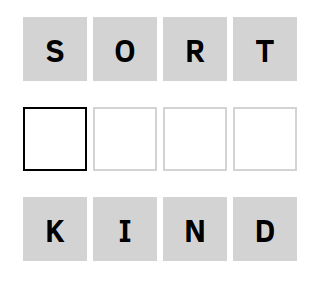
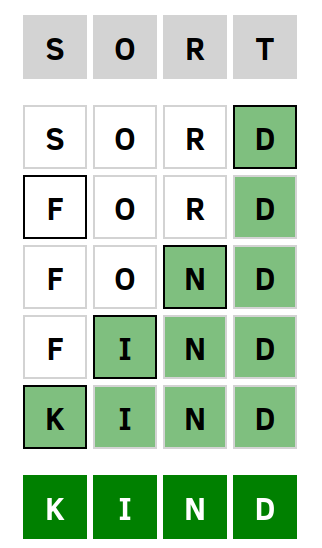

A few weeks ago, a friend saw that I had created a Wordle solver and he thought I might enjoy another word puzzle called Weaver. However, he couldn’t have been more wrong! I actually hate puzzles, especially the ones involving words.
When I can’t solve them quickly enough, frustration sets in. It’s followed by self-doubt, anger towards myself, and eventually, resentment towards the creators of these puzzles, the universe, and life itself. For me, the only way to escape this mental turmoil is to create a solver and be done with them once and for all.
Read on to discover how I once again managed to avoid spiraling into an existential crisis.
So what is Weaver?
Weaver is an online game where players are presented with word ladder puzzles. In these puzzles, players must transform a starting word into a target word by changing one letter at a time, while forming valid English words in each step.


The objective is to make the chain as short as possible. If you complete a puzzle you’ll get feedback on how close you were on getting a shortest solution. Weaver uses a dictionary to check if the words you enter are valid English words. The example above shows the puzzle on the left, and a (shortest) solution on the right.
Word ladders are nothing new. Their origin can be traced back to Lewis Carroll, who introduced them in the 19th century. He called them Doublets.
Weaver uses four-letter words only, so that’s what I’ll do as well.
Getting the word list
I started by getting the word list from Weaver’s JavaScript source code. It currently consists of 4029 four-letter words. I put this word list in my Prolog source code as follows:
words([aahs, aals, abas, abba, abbe, abed, abet, able, ably|...]).In Weaver’s source code I also found a five-letter word list, but it doesn’t seem to be used. If you want to include five-letter words as well, you can just extend the list. Of course you can’t weave from a four to a five-letter word or vice versa.
Specifying a graph structure
To solve word ladders, we can start by representing the word list as a graph where each node represents a word, and there is an edge between two nodes if and only if the corresponding words differ by exactly one letter. A small subset of this graph would look like this:
Solving a word ladder would be the equivalent of finding the shortest path between two nodes in a graph.
Here we marked the shortest path between the words sort and kind, which is the answer to the puzzle we saw above.
I defined the following predicates that specify the connectivity of the graph.
% Helper predicates
count_different_elements([], [], 0).
count_different_elements([X|Xs], [Y|Ys], N) :-
X \= Y,
count_different_elements(Xs, Ys, M),
N is M + 1.
count_different_elements([X|Xs], [X|Ys], N) :-
count_different_elements(Xs, Ys, N).
count_different_characters(A, B, N) :-
atom_chars(A, L1),
atom_chars(B, L2),
count_different_elements(L1, L2, N).
% The successor predicate
s(N, M, 1) :-
words(Words),
member(M,Words),
count_different_characters(N, M, 1).The predicates count_different_elements/3 and count_different_characters/3 are helper predicates that handle the counting of different characters between two words. They are used to determine the cost or distance between two words in terms of the number of character differences.
The s/3 predicate defines a successor relation between words. It establishes that a successor word M is connected to an initial word N if they have exactly one different character. We assume all transitions have a cost of 1.
One question that might arise is whether the full graph that contains all words is a connected graph. In other words, if there is always a path between two arbitrary nodes.
Let’s find out how many (if any) words are not connected to any other word by entering the following query:
words(W), bagof(M,(member(M,W), not(s(M,_,_))),Bag), length(Bag,L).W = [aahs, aals, abas, abba, abbe, abed, abet, able, ably|...],
Bag = [abri, adze, ahoy, amok, ankh, aqua, arak, asci, auld|...],
L = 62.We find that for 62 words there was no successor found. This alone tells us that the graph is disconnected which means that for some pairs of words you can’t make a word ladder. There are also smaller groups of word clusters that form their own little subgraph. For instance the words ordo, orzo, and ouzo form their own little graph disconnected from any other words.
Such a cute little graph. Imagine the psychological torment you’d cause by asking the biggest Weaver afficionado to create a word ladder going from beer to ouzo. Just kidding, don’t be evil.
The A* search algorithm
The A* algorithm is a popular pathfinding algorithm used for finding the shortest path between a start node and a goal node in a weighted graph. It uses a combination of the actual cost (path cost from the start node) and the heuristic cost (estimated cost from the current node to the goal) to guide the search towards the goal while exploring the graph efficiently.
Because this algorithm works on weighted graphs only, we set the weight of all edges equal to 1. You can find many implementations of A* for a variety of programming languages online. I adapted one from here for use in the solver.
% A* with cycle checking
a_star(Start, Answer) :-
h(Start, H), !,
a_star([[(0, H), Start]], [], Answer, 0).
a_star([ [_, FinalState | Path ] | _], _, Answer, _) :-
goal(FinalState), !,
reverse([FinalState | Path], Answer).
a_star([ [(Gval,_), FinalState | Path ]| OtherPaths], OldStates, Answer, NumExpanded) :-
cycle_check(FinalState, Gval, OldStates),
bagof((C, N), s(FinalState, N, C), Neighbours),
expand(Gval, FinalState , Path, Neighbours, NewPaths),
prune(NewPaths,PrunedPaths, OldStates),
combine(PrunedPaths, OtherPaths, NewFrontier),
N is NumExpanded + 1, !,
(N =< 9999 -> a_star(NewFrontier, [(FinalState, Gval)|OldStates], Answer,N) ; !, fail).
a_star([ _ | OtherPaths], OldStates, Answer,NumExpanded) :-
!, a_star(OtherPaths, OldStates, Answer,NumExpanded).
expand(_, _, _, [], []).
expand(Gval, State, Path,
[(Cost,NewState) | RestNeigh], [[(NGval, NHval), NewState, State | Path] | RestNewPaths]) :-
NGval is Gval + Cost,
h(NewState, NHval),
expand(Gval, State, Path, RestNeigh, RestNewPaths).
cycle_check(_, _, []).
cycle_check(State, Gval, [(State, OldGval) | Rest]) :-
Gval < OldGval, !,
cycle_check(State, Gval, Rest).
cycle_check(State, Gval, [(OldState, _) | Rest]) :-
State \== OldState, !,
cycle_check(State, Gval, Rest).
prune([ NewPath | RestNPaths], PrunedPaths, OldStates) :-
NewPath = [(Gval, _), FinalState | _],
cycle_check(FinalState, Gval, OldStates), !,
prune(RestNPaths, RestPruned, OldStates),
PrunedPaths = [NewPath | RestPruned].
prune([ _ | RestNPaths], PrunedPaths, OldStates) :-
prune(RestNPaths, PrunedPaths, OldStates).
prune([], [], _).
combine([NewState|RestNewStates], OldStates, NewFrontier) :-
insert(NewState, OldStates, New),
combine(RestNewStates, New, NewFrontier).
combine([], AllAdded, AllAdded) :- !.
insert_list([NewState|RestNewStates], OldStates, NewFrontier) :-
insert(NewState, OldStates, New),
insert_list(RestNewStates, New, NewFrontier).
insert_list([], AllAdded, AllAdded) :- !.
insert(NewState, [OldState|RestOld],
[NewState, OldState|RestOld]) :-
lower_or_equal_f_value(NewState, OldState), !.
insert(NewState, [OldState|RestOld],
[OldState|InsertedIntoRest]) :-
greater_f_value(NewState, OldState),
insert(NewState, RestOld, InsertedIntoRest), !.
insert(NewState, [], [NewState]).
lower_or_equal_f_value([(G1,H1) | _], [(G2, H2) | _]) :-
X is G1 + H1, Y is G2 + H2, X =< Y, !.
greater_f_value([(G1,H1) | _], [(G2, H2) | _]) :-
X is G1 + H1, Y is G2 + H2, X > Y, !.It assumes a successor predicate s/3 that we’ve defined above. Furthermore, it expects a predicate h/2 that defines a heuristic to guide the search and a goal/1 predicate that gets satisfied once the search has reached the final node.
The heuristic I used is the number of letters that are different from the target word. The closer we are to the final node, the more letters are expected to be correct.
% The heuristic
h(N, H) :-
goal(M),
count_different_characters(N, M, H).The A* search algorithm is guarenteed to find the shortest path if the heuristic we choose is admissible. A heuristic is said to be admissible if it never overestimates the cost of reaching the goal. In our case we know it never overestimates the cost, because if n letters are different from the target word, we need at least n more steps.
The goal/1 predicate is dynamically added to the Prolog database before we commence our search. The weaver/3 predicate is the top-level predicate that you call when you want to solve a puzzle.
:- dynamic goal/1.
weaver(Start, Goal, Solution) :-
retractall(goal(_)),
assert(goal(Goal)),
a_star(Start, Solution).You can find a copy of this code as a GitHub gist here.
Running the solver
To run the solver, you first start the Prolog interpreter (I use SWI-Prolog) by opening up a terminal and typing:
swiplThis will start the Prolog interpreter. You can then load the solver by typing:
[weaver].This loads the weaver.pl file. To solve a word ladder going from sort to kind, you’d enter:
weaver(sort, kind, Solution).Solution = [sort, sord, ford, fond, find, kind].There you have it! No more emotional distress over not being able to solve word ladders.